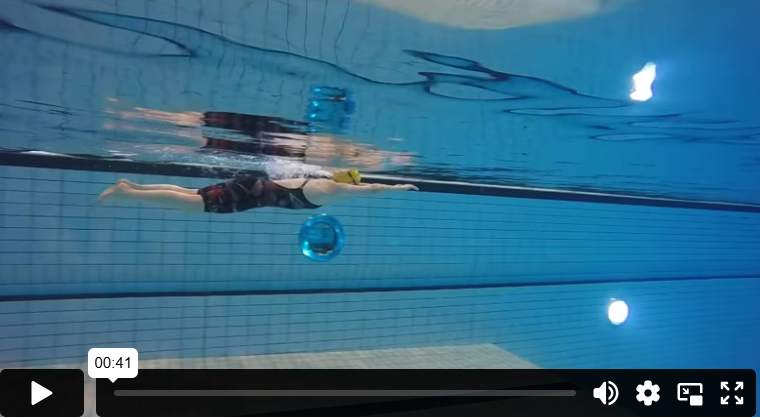

مقدمة
في بعض الأحيان قد تبدو السباحة مجهدة وصعبة. قد تبذل جهدًا كبيرًا دون التقدم كثيرًا للأمام، وقد تشعر أن مجرد البقاء طافيًا أمر مرهق. إيجاد وضعية جيدة للجسم في الماء يعني محاولة تقليل مقاومة الماء قدر الإمكان أثناء السباحة. إذا تمكنت من ذلك، ستشعر أن السباحة أصبحت أسهل، ويمكنك التحرك بشكل أسرع في الماء مما يساعدك أيضًا على البقاء طافيًا بسهولة أكبر. كلما كان جسمك مستويًا أكثر في الماء، قلت المقاومة عند التحرك للأمام. أما إذا كانت وضعية الجسم مع القدمين في الأسفل داخل الماء، فسيكون هناك المزيد من الماء الذي يجب دفعه أمامك، بينما إذا كان الجسم مستويًا عند السطح، فإنك تقلل مقاومة الماء إلى الحد الأدنى.
